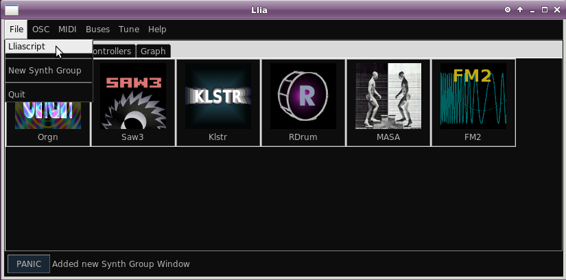
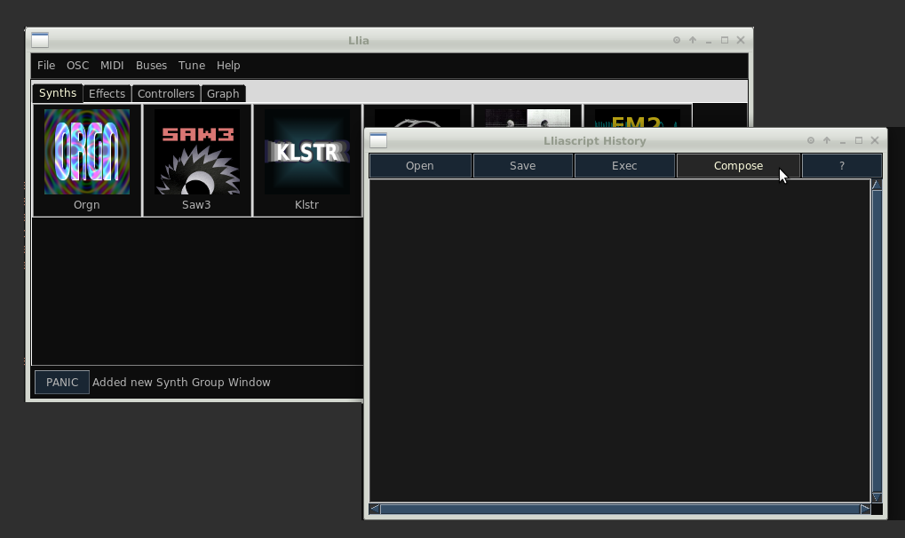
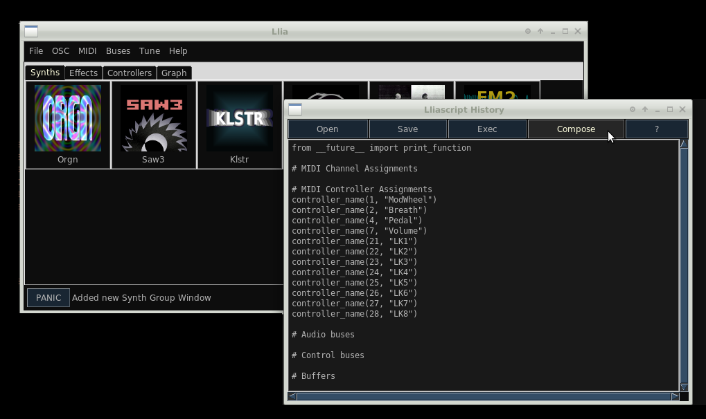

The compose feature allows the current state of Llia to be saved and later recalled. At the moment compose preserves all active synths, buses and the interconnection between them. What it does not preserve are synth banks (if they have been changed from the default), nor does it preserve the current program number. At the moment compose does not preserve the layout of icons on the graph editor.
You access compose from the lliascript option of the main window File menu.
This pops up a lliascript text editor. Click the Compose button.
This generates Python code which may be used to reconstruct the current state. The code is also printed to the terminal window which launched Llia.
Use the save button or copy and paste into an editor to save a permanent copy.